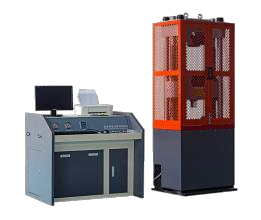
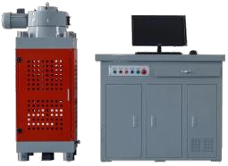
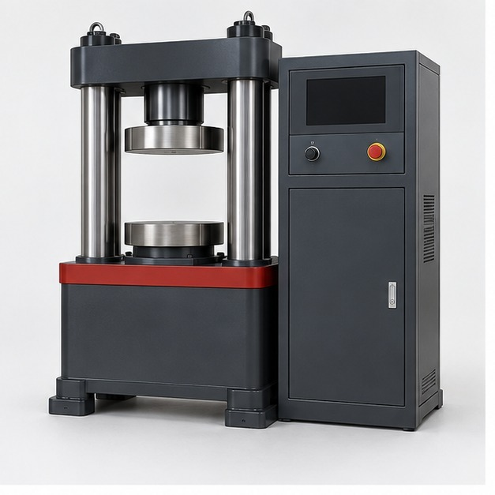
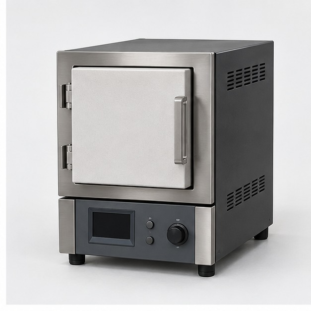
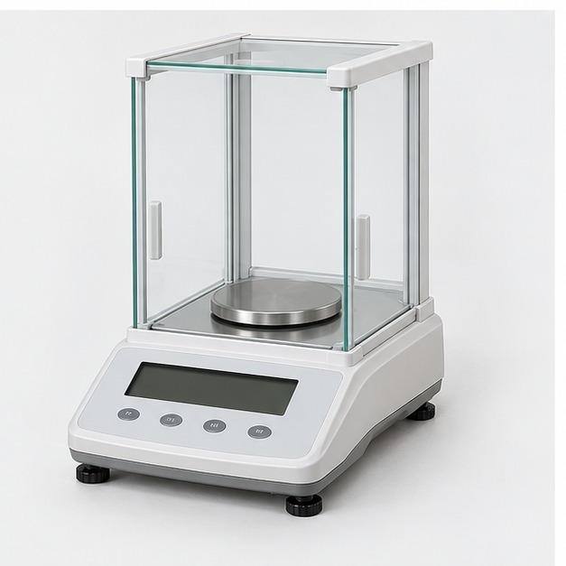
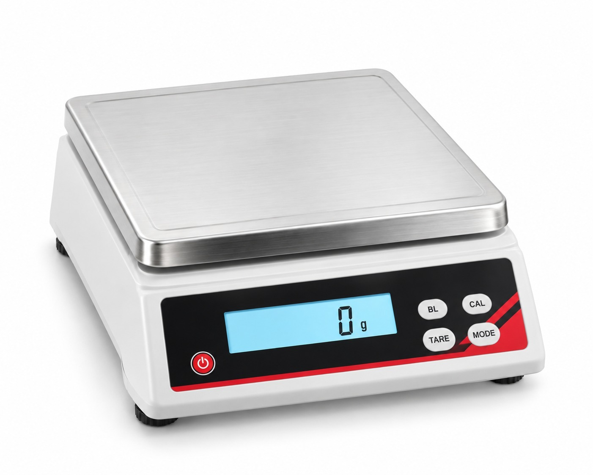

Armstrong product range
Armstrong Testing Equipment
A distinct Armstrong-branded range supplied by Hung Ta Instrument. Hung Ta’s existing machine range remains separately identified.
Available catalogues
Universal, Compression & Laboratory Equipment

WAW-300D Universal Testing Machine
300 kN capacity. Computerised electro-hydraulic servo hydraulic universal testing machine.

YEW-3000E Compression Testing Machine
3,000 kN capacity. Computer-controlled compression testing machine.

Armstrong Automatic Concrete Compression Tester
Models A-HTA-CTM-1000 / A-HTA-CTM-2000. Automatic control, 1,000 kN or 2,000 kN configurations.

Armstrong 800 °C Muffle Furnace
Model HTA-MF-800. Laboratory furnace with maximum temperature of 800 °C.

Armstrong 200 g Laboratory Balance
Model HTA-LB-200. 200 g capacity, 0.1 g readability.

Armstrong 5 kg Digital Weighing Scale
Model HTA-WS-5K. 5 kg capacity for routine bench weighing.
Brand distinction
Armstrong products are presented as a separate brand range. For Hung Ta-branded tensile and universal testing machines, browse the Hung Ta product catalogue.